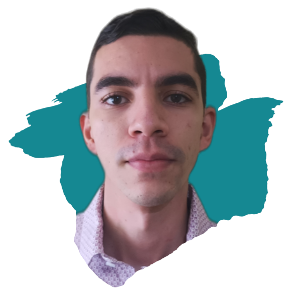

            <div class="post-author d-flex align-items-center">
              
              <div>
                <h4>Julio Díaz</h4>
                <div class="social-links">
                  <a href="https://www.linkedin.com/in/juliodiazortiz/"><i class="bi bi-linkedin"></i></a>
                  <a href="https://www.github.com/JLykos"><i class="bi bi-github"></i></a>
                  <a href="https://t.me/DarthStark"><i class="biu bi-telegram"></i></a>
                </div>
                <p>
                  Ingeniero mecatrónico con experiencia en mantenimiento de maquinas de extrusión y soplado de plástico, control de procesos y repotenciación de equipos.
                </p>
              </div>
            </div>